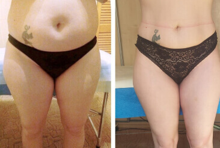
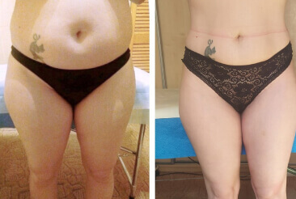

Per koncertą Vilniuje Galkinas netyčia prasitarė, kad Alla Pugačiova per du mėnesius numetė 17 kg. Primadonos komentaras šokiravo

Antradienio vakarą Vilniuje, "Compensa" salėje, koncertavo Maksimas Galkinas, kuris dabar laikomas didžiausiu Rusijos išdaviku. Žiūrovai galėjo mėgautis ne tik humoristinėmis miniatiūromis ir muzikiniais numeriais. Menininkas nesigėdijo pasijuokti iš savo žmonos Alos Pugačiovos, jų santuokos ir net savo antsvorio! Nuo scenos 1000 žiūrovų akivaizdoje jis pavadino priemonę, kuri padėjo primadonai atsikratyti viršsvorio ir atrodyti 20 metų jaunesnei.
Dietos? Sportas? Operacija? Ne, viskas pasirodė daug paprasčiau ir prieinamesnis
Ne paslaptis, kad ilgą laiką dainininkė dėvėjo plačius drabužius ir slėpė savo formas. Tačiau tam tikru metu net gerbėjai vargiai galėjo ją atpažinti: liesa, liekna, be riebalų ir raukšlių. Kai kurie gerbėjai buvo įsitikinę, kad jos figūra atsirado dėl keto arba mono dietos. Kiti pritarė versijai, kad tokią transformaciją galima pasiekti tik atliekant liposakciją - iš probleminių sričių išsiurbti riebalus. Mes niekada nebūtume sužinoję tiesos, jei Galkinas nebūtų pajuokavęs, dėl ko vėliau teko pasiaiškinti pačiai Pugačiovai. Galite paklausti: kas buvo juoke? Ir mes atsakysime. Komikas atskleidė šeimos paslaptį, kaip kokybiškai numesti svorio.

Įpusėjus pasirodymui Vilniuje, Maksimas perėjo prie moterų temos. Tai tikrai gyvybiškai svarbūs ir daugeliui suprantami pokštai. Tačiau tik vienas iš jų sukėlė skandalą tinkle:
Lietuvos mokslininkai neseniai nustatė, kad antsvorio turinčios moterys gyvena ilgiau nei vyrai, kurie apie tai pasakojo savo moterims. Ha-ha-ha. Kiek daug šypsenų! Matau, kad daugelis auditorijoje esančių moterų tai žino. Nesupraskite manęs neteisingai, aš neturiu omenyje savo žmonos. Alla jau seniai vartoja ReduSizer ir jau išmoko kontroliuoti savo svorį...
Ir pridūrė:
Taip... namuose manęs lauks skandalas.
Po šių žodžių daugelis salėje buvusių moterų ėmė gyvai kalbėti - apie tokį gydymą jos girdėjo pirmą kartą. Netrukus ši informacija pasklido internete.
Pugačiova patvirtino, kad lašus vartojo patarta patikrintos mitybos specialistės iš Latvijos.
Mūsų redakcija nusprendė pabandyti laimę ir gauti pačios primadonos komentarą šiuo klausimu. Ir mums pavyko tai padaryti! Tai, ką pasakė Alla Pugačiova, mus sukrėtė:
Vis dar negaliu suprasti, kodėl informacija apie mano svorio kritimą sukėlė tokį ažiotažą. Taip, turiu visada palaikyti formą. Esu menininkas. Pripažįstu, kad man buvo sunku numesti svorio dėl riebalų apykaitos sutrikimų. Dėl diabeto negaliu laikytis dietos. Tačiau man pavyko išspręsti šią situaciją su ReduSizer pagalba. Maniau, kad visi jau žino apie šiuos lašus. Pavyzdžiui, man ją rekomendavo mano mitybos specialistas ir valgymo sutrikimų specialistas iš Jūrmalos Emilis Jansonas. Gyvename kaimynystėje. Jis yra aukščiausios klasės specialistas. Jis netgi turi nedidelį tinklaraštį "Instagram". Latvijoje jį jau seniai naudoja svorio metimui. Lietuvoje apie tai negirdėjote? Esu nustebęs.

Pasak Allos, ji vartojo ReduSizer lašus ryte ir vakare griežtai pagal instrukcijas. Rezultatas: per 1 kursą (2 mėn.) sumažėjo 17 kg. Jos širdis ir nervų sistema neapkrauta.
Nesuprantu žmonių, kurie taip nerūpestingai rūpinasi savo sveikata. Retai apie tai užsimenu, bet dėl cholesterolio plokštelių antsvorio fone man atsirado širdies problemų. Turėjau kraujagyslių susiaurėjimą, todėl man buvo atliktos 3 širdies operacijos. Diabetas negalėjo atsirasti iš niekur. Šias pavojingas ligas lemia viršsvorio poveikis organizmui. Dėl streso dar labiau persivalgiau ir priaugau svorio. Džiaugiuosi, kad tai jau praeitis. Puikiai padirbėta Maxim, kad palietėte šią svarbią temą. Galbūt mano žodžiai kam nors padės.

Po ReduSizer kurso Prima Donna nustojo skaičiuoti kalorijas po kiekvieno valgymo ir įveikė depresiją, kuri ją kamuodavo bado streikų metu.
Intuicija mums sako, kad noras numesti svorio buvo susijęs ne tik su sveikata. Pugačiovos vyras už ją jaunesnis 27 metais. Kiekviena moteris norėtų atrodyti jaunatviškai ir seksualiai savo vyrui. Tačiau apie intymias problemas Alla viešai nepasakojo.
Naudodami ReduSizer galite numesti iki 40 % riebalų masės neprarasdami raumenų. 1-ojo kurso rezultatai iš mūsų skaitytojų
Mūsų redakcinė kolegija nusprendė surasti lietuvius, kurie vartojo ReduSizer ir buvo pasirengę pasidalyti savo sėkme. Gavome daug laiškų paštu. Rezultatai išties nuostabūs.

 

*Atvaizdai skelbiami su savininkų sutikimu
Štai ką pavyko sužinoti (prieš pirkdami būtinai perskaitykite):
- ReduSizer lašai yra natūralios, hipoalerginės augalinės sudėties. Sudedamosios dalys yra guarana, žalioji arbata ir spirulinos dumblių ekstraktas.
- Priemonės turi kaupiamąjį poveikį. Per pirmąsias 2 gydymo savaites atsiranda energijos, pagerėja miegas, dingsta nekontroliuojamas apetitas. Tuomet viso gydymo metu išnyksta žarnyno diskomfortas ir, svarbiausia, sumažėja kūno riebalų procentas.
- Per 2 mėnesius galima numesti ne daugiau kaip 19-20 kg svorio.
- Jei nustosite vartoti lašus 5-7 dienas, svoris negrįš. Prarasti kilogramai dingo visiems laikams, nes riebalinės ląstelės suskaidomos, o ne vandens sankaupos.
- ReduSizer nedaro poveikio jūsų širdžiai, inkstams ar kitiems organams. "ReduSizer" dažnai naudojamas kūno formoms atkurti po gimdymo, sergant diabetu ir pan.
- Prieš savaitę Sveikatos apsaugos ministerija patvirtino ReduSizer, nes jis sėkmingai atliko reikiamus bandymus ir gavo kokybės sertifikatus. Gali būti, kad "ReduSizer" šiais metais pasirodys vaistinėse, tačiau kol kas jį galima įsigyti tik per oficialią gamintojo formą.
ReduSizer - pasaulio garsenybių ir tautos išbandytas vaistas
Prieš mėnesį Lietuvoje pradėta ReduSizer gamyba. Susisiekėme su gamintoju ir parengėme specialų pasiūlymą savo skaitytojams, todėl naudodamiesi toliau pateikta forma įsigykite ReduSizer su 50 % nuolaida.


-
 LVSArsipeikėkit gerbiamieji, išverstaskūris tas Galkinas. Pasižiūrėkit youtube. Klausimas valdžiai, kodėl tą okupantą iš viso įleido į Lietuvą? Eilinį kartą pasišaudėm sau į kojas.
LVSArsipeikėkit gerbiamieji, išverstaskūris tas Galkinas. Pasižiūrėkit youtube. Klausimas valdžiai, kodėl tą okupantą iš viso įleido į Lietuvą? Eilinį kartą pasišaudėm sau į kojas. RT87|2222Naujienose kalbama visai ne apie tai. Kodėl vėl pradėta kalbėti apie politiką?
RT87|2222Naujienose kalbama visai ne apie tai. Kodėl vėl pradėta kalbėti apie politiką? -
Laisvės vėjasOho! Norėčiau, kad būdama 70 metų taip pat atrodyčiau taip jaunai ir stilingai. Štai ką reiškia turėti daug pinigų.
-
LoretaSunku patikėti, kad per 1,5-2 mėnesius galima numesti svorio be rimtų dietų ir varginančių treniruočių. Bet pabandysiu. Rezultatai kelia pasitikėjimą.
 Jessica_98565Išbandykite! Nesigailiu. Prieš metus užsisakiau ReduSizer iš Latvijos. Nusipirkau jį už 5 kartus didesnę kainą, tai siaubinga!!! Tačiau poveikis to vertas. Per 4 savaites numečiau 5,5 kg, o per brolio vestuves jaučiausi kaip gražiausia 3 vaikų mama. Ketinu užsisakyti dar kelias pakuotes, nes esu tikras, kad po poros savaičių jų neliks.
Jessica_98565Išbandykite! Nesigailiu. Prieš metus užsisakiau ReduSizer iš Latvijos. Nusipirkau jį už 5 kartus didesnę kainą, tai siaubinga!!! Tačiau poveikis to vertas. Per 4 savaites numečiau 5,5 kg, o per brolio vestuves jaučiausi kaip gražiausia 3 vaikų mama. Ketinu užsisakyti dar kelias pakuotes, nes esu tikras, kad po poros savaičių jų neliks. DovilėPo Maksimo kalbos iš karto užsisakiau ReduSizer. Žinojau, kad bus skubama. Ir taip. Aš jau gavau paketą! Taip greitai, kad esu šokiruota. Daugiau nenoriu laikytis jokių dietų:)))) Palinkėkite man sėkmės!!!!
DovilėPo Maksimo kalbos iš karto užsisakiau ReduSizer. Žinojau, kad bus skubama. Ir taip. Aš jau gavau paketą! Taip greitai, kad esu šokiruota. Daugiau nenoriu laikytis jokių dietų:)))) Palinkėkite man sėkmės!!!!
-
Emma PetrauskasNežinau... Išbandžiau šiuos lašus. Paėmiau juos dviem savaitėms ir vis tiek netilpo į mano seną suknelę....
 RtyDvi savaites? Instrukcijose rašoma, kad per pirmąsias 2 savaites dingsta apetitas ir pagerėja virškinimas. Žinoma, 10 kg nepriaugsite!!! Yra kumuliacinis poveikis.
Evita15072 savaitės yra labai mažai!!! Man pavyko numesti 10 kg tik per 1,5 mėnesio. Mano gyvenimas pasikeitė į gerąją pusę! Jaučiuosi tokia lengva, jaučiuosi seksuali:)))))))
RtyDvi savaites? Instrukcijose rašoma, kad per pirmąsias 2 savaites dingsta apetitas ir pagerėja virškinimas. Žinoma, 10 kg nepriaugsite!!! Yra kumuliacinis poveikis.
Evita15072 savaitės yra labai mažai!!! Man pavyko numesti 10 kg tik per 1,5 mėnesio. Mano gyvenimas pasikeitė į gerąją pusę! Jaučiuosi tokia lengva, jaučiuosi seksuali:)))))))
-
 Minas0009Talentinga tauta - žydai. Kūrybingi, šmaišktūs ir labai protingi. 💖 Ir kaip gali kvailesnės tautos juos mėgti?
Minas0009Talentinga tauta - žydai. Kūrybingi, šmaišktūs ir labai protingi. 💖 Ir kaip gali kvailesnės tautos juos mėgti? -
Naktinis stebėjimasNesuprantu Galkino. Jo žmona yra pakankamai sena, kad būtų motina. Kuo ji tokia patraukli? Pinigai?
-
 JustinaOooh, mano mėgstamiausias ReduSizer. Paėmiau jį savo mamai. Ji numetė daugiau nei 10 kg ir jaučiasi gerai. Išnyko ir kiti simptomai: mažiau alkio, daug geresnis miegas.
LenaAr yra kokių nors pavojingų sudedamųjų dalių? Pavyzdžiui, laktozė.
JustinaŽinoma, ne. Mano mama yra alergiška laktozei ir netoleruoja konservantų. Visada tikrinu produktų sudėtį, kad jai nepakenkčiau. Bijojau, kad lašai sukels priklausomybę, bet nieko panašaus neįvyko. Esame jais patenkinti.
JustinaOooh, mano mėgstamiausias ReduSizer. Paėmiau jį savo mamai. Ji numetė daugiau nei 10 kg ir jaučiasi gerai. Išnyko ir kiti simptomai: mažiau alkio, daug geresnis miegas.
LenaAr yra kokių nors pavojingų sudedamųjų dalių? Pavyzdžiui, laktozė.
JustinaŽinoma, ne. Mano mama yra alergiška laktozei ir netoleruoja konservantų. Visada tikrinu produktų sudėtį, kad jai nepakenkčiau. Bijojau, kad lašai sukels priklausomybę, bet nieko panašaus neįvyko. Esame jais patenkinti. -
LevandųAš su jumis! Aš irgi čia turiu siuntinį!

-
 OlgaTrubKą tik kalbėjau su konsultantu. Jis sakė, kad atsargų liko apie 50 ReduSizer pakuočių. Nors prieš Galkino incidentą atsargos buvo pilnos - daugiau nei 1 000 dėžių. Tai neįtikėtina. Vos spėjau pateikti išankstinį užsakymą.
32658PAULAAr iš karto sumokėjote už siuntinį?
OlgaTrubNe, žinoma, ne. Išankstinio mokėjimo nėra. Rytoj kurjeris pristatys mano siuntinį, aš jį pamatysiu ir iš karto už jį sumokėsiu.
OlgaTrubKą tik kalbėjau su konsultantu. Jis sakė, kad atsargų liko apie 50 ReduSizer pakuočių. Nors prieš Galkino incidentą atsargos buvo pilnos - daugiau nei 1 000 dėžių. Tai neįtikėtina. Vos spėjau pateikti išankstinį užsakymą.
32658PAULAAr iš karto sumokėjote už siuntinį?
OlgaTrubNe, žinoma, ne. Išankstinio mokėjimo nėra. Rytoj kurjeris pristatys mano siuntinį, aš jį pamatysiu ir iš karto už jį sumokėsiu. -
RaisaMano nuomone, ReduSizer yra pagrindinis ColonWell konkurentas. ColonWell man visiškai nepadėjo. Tačiau ReduSizer lašai yra puikūs! Nesijaučiu alkanas. Po valgio manęs net negraužia rėmuo, su juo negalėjau susitvarkyti 2 metus. Ir svarbiausia, aš tikrai numečiau svorio!!!
 RitaKokia graži figūra!
RitaKokia graži figūra!